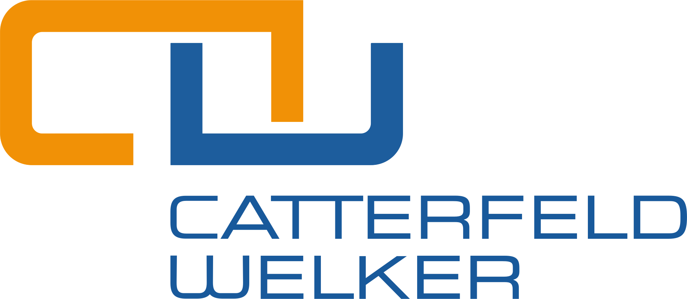
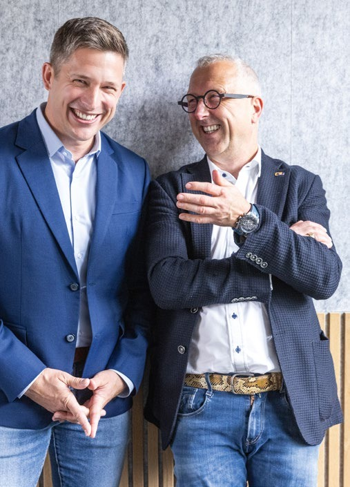

Post von uns.
Bitte an der Perforierung aufreißen.


Ihr Bauprojekt:
Unsere Passion.
Lebendig im Denken. Stark in der Abwicklung.
Miteinander im Handeln.
Unsere neue Website ist in Arbeit. 2027 schlagen wir mit Catterfeld Welker ein neues Kapitel auf.
Bis dahin finden Sie hier alles Wichtige: was wir tun, wie wir arbeiten und wie Sie uns erreichen.
Bleiben Sie gespannt!
45
Jahre Erfahrung – seit 1981
56
Team-Mitglieder
20
Projekte pro Jahr
Baumanagement ist für uns mehr als Organisation.
Es ist lebendiges Handwerk und partnerschaftliches Miteinander. Als unabhängige Ingenieurgesellschaft verbinden wir strukturierte Verlässlichkeit mit frischen Ideen: Wir denken Bauabwicklung unkonventionell weiter, treiben gemeinsam Innovationen voran und packen Projekte mutig und entschlossen an.
Erfolg entsteht, wenn Menschen auf Augenhöhe zusammenarbeiten. Dazu bauen wir auf ein starkes Wir-Gefühl. Lassen Sie uns gemeinsam Großes bewegen – wir freuen uns auf Ihr Projekt!
Leistungen
Von der Planung bis zur Übergabe – für Neubau und Bestand.
- Planung
- Ausschreibung und Vergabe
- Objektüberwachung, Bauleitung und Baumanagement
- Lean-Management
- Kostenermittlung
- Terminplanung
- Logistikplanung
Lean Construction: Bauen im Takt
Wert für Bauherren schaffen, Verschwendung vermeiden. Als Mitglied im German Lean Construction Institute (GLCI) bringen wir Lean-Methoden in Planung und Ausführung.
01
Taktplanung
Durchgängige Abläufe, gemeinsam mit den Gewerken geplant.
02
Pull-Planung
Termine vom Ziel her rückwärts planen und abstimmen.
03
6-Wochen-Vorschau
Kapazitäten wöchentlich mit allen Firmen abstimmen.
04
Dailies
Kurze tägliche Runden für schnelle Problemlösung.
Referenzen
Eine Auswahl aus über vier Jahrzehnten – in Bayern, Thüringen, Sachsen und Hessen.
Verwaltung
BayWa Hochhaus
Optineo Werksviertel, München
Rathaus Planegg
Wohnen
Hofmark am Olympiapark, München
Wohnbebauung Diamaltpark, München
Meiller Gärten, München-Moosach
Bildung
Feodor-Lynen-Gymnasium Planegg
Grundschule Neuried
Sanierung St. Martin Schule
Gesundheit & Forschung
Schön Klinik Prien, Haus B
Forschungsgebäude Freising
Betontechnikum Trostberg
Kultur & Denkmal
Sanierung Schloss Herrenchiemsee
Mathäser, München
Werk 12, München
Aktuell
Giesserei, Garching
Stuntzstraße, München-Bogenhausen
Boarding House MG 04, München
Lassen Sie uns gemeinsam Großes bewegen.
Sie planen ein Projekt? Wir freuen uns auf das Gespräch.
info@ig-cw.deMünchen
Catterfeld Welker GmbH
Steinerstraße 15, Haus E
81369 München
Telefon
Niederlassung
Frankfurt am Main